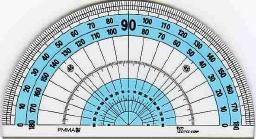
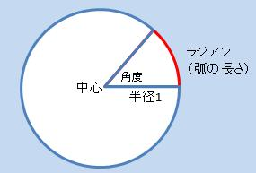
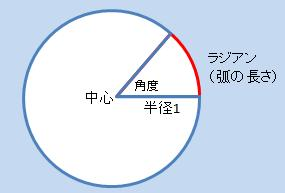
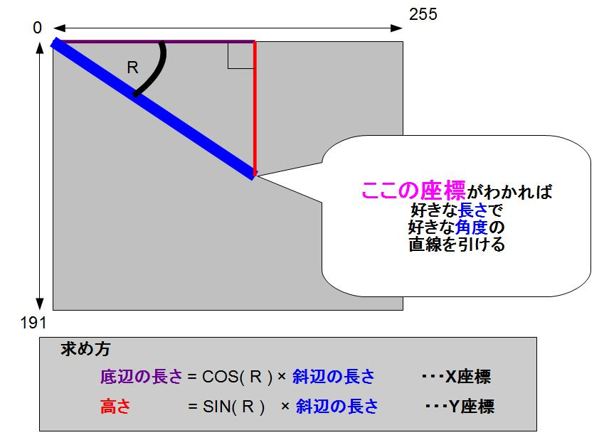
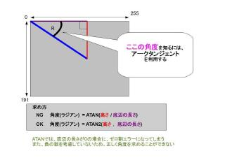
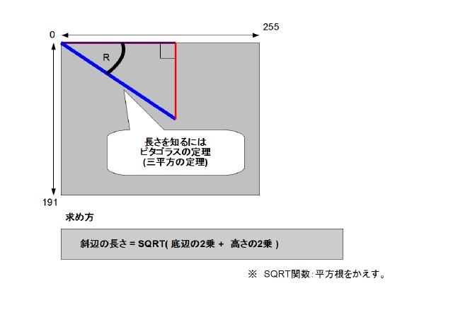

×

プチコン講座
初心者の方へ
プチコンやプログラムに関して、全く知らない初心者の方は
公式サイトのプチコン初心者講座が一番丁寧でわかりやすいです。
プチコンmkII 初心者講座
また、ここではゲームプログラムを作成するにあたっての、
基礎的な知識を、極力難しいことを考えずに伝えたいと考えております。
目次
- ジャンプの動作
- 角度計算の基本
- 音楽(ＭＭＬ)の基本
角度計算の基本
○


コンピュータにでは一般的な180度の分度器という概念はありません。
1周を360とする考え方は、コンピュータには理解し難いからです。
なので、円の中心角とそれに対する弧の長さは比例する。
ということを利用したラジアンという単位が使用されます。
ここでは難しいことにはあまり触れませんが、
使い方が分かればとそれほど複雑でもありません。
ラジアン
180°＝π
180°＝3.141592
また、ラジアンと角度(360°法)は、関数で簡単に変換できます。
(RAD,DEG関数)
コンピュータの画面では、原点が左上になるのがポイントになります。
実際に好きな場所に直線を描画する際には、座標が必要になります。

そこで三角関数の「サイン：SIN」と「コサイン：COS」が必要になります。
使い方は
X座標を求めるにはコサイン(COS)
Y座標を求めるにはサイン(SIN)
と暗記しても良いでしょう。
わかりにくければ実際に簡単なサンプルを動かしてみればわかります。
～勉強するより動かして慣れろ～
逆に座標から角度を知るには、アークタンジェントを使用します。

アークタンジェントには、ATANとATAN2があるので注意。
ATAN2を使用すると、シューティングゲームとかで自分に真っ直ぐ向かってくる玉を実現できます。
長さを知るには、三平方の定理を使用すると知ることができます。

また、角度から高さを知るには、タンジェントを使えば知ることができます。
一応サンプルプログラム置いておきます、丁寧に１行１コメントになっておりますので、ファイルサイズが若干大きいです。
QRコード
プログラムリスト

数学＝計算ではない！原理や構造の理解を大切にすると、数学はもっとおもしろくなる！数学は永遠性を秘めている。数学だけが人間の唯一の証ではないかという感動が湧いてくる—。